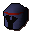

Watchman
| Config name | macro_watchman5 |
| NPC id | 435 |
| Combat level | 120 |
| Hitpoints | 120 |
| Attack / Strength / Defence | 100 / 100 / 100 |
| Options | Attack |
| Category | macro_event_watchman |
| Wander range | 3 tiles from spawn |
| Max range | 5 tiles from spawn |
| Defined in | scripts/macro events/configs/antimacro.npc |
Watchman
The strong arm of the law.
Drops
Drop script: scripts/macro events/scripts/thieving/macro_event_watchman.rs2 (category handler _macro_event_watchman)
Drop table
| Item | Quantity | Rarity | Notes |
|---|---|---|---|
| 2 | 1/8 (12.5%) | ||
| 16 | 7/64 (10.94%) | ||
| 20 | 3/32 (9.38%) | ||
| 30 | 5/64 (7.81%) | ||
| 1 | 1/16 (6.25%) | ||
| 1-3 | 1/16 (6.25%) | ||
| 50 | 1/16 (6.25%) | ||
| 50 | 7/128 (5.47%) | ||
 Mithril med helm | 1 | 3/64 (4.69%) | |
| 1 | 3/64 (4.69%) | ||
| 70 | 3/64 (4.69%) | ||
| 22 | 5/128 (3.91%) | ||
| 105 | 1/32 (3.12%) | ||
| 3 | 1/32 (3.12%) | ||
| 3 | 1/32 (3.12%) | ||
| Herb drop table table | see table | 1/32 (3.12%) | members |
| Gem drop table table | see table | 1/32 (3.12%) | |
| 8 | 1/64 (1.56%) |
Locations
This NPC is not placed on the map by the map files (it may be spawned by scripts, e.g. during quests, or be a variant).